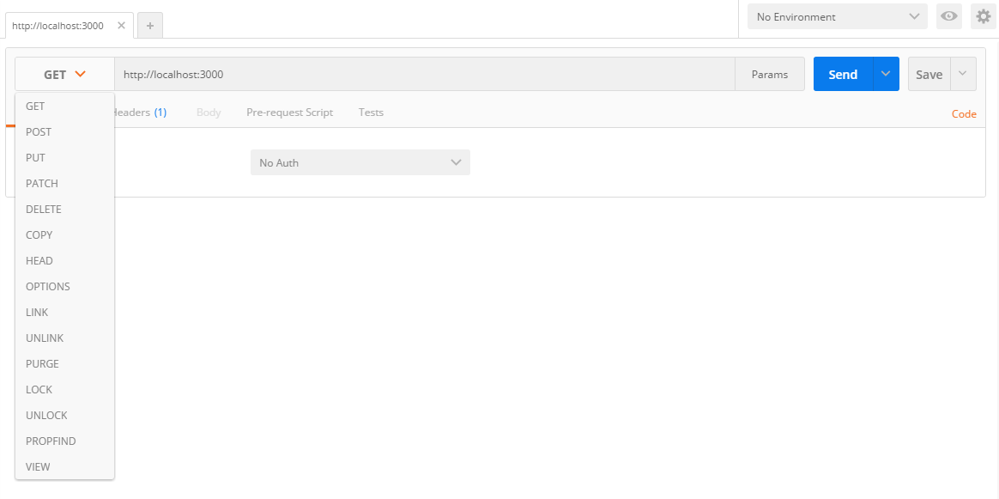
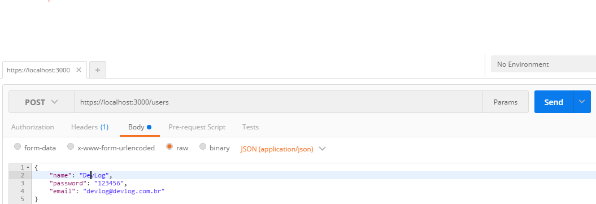
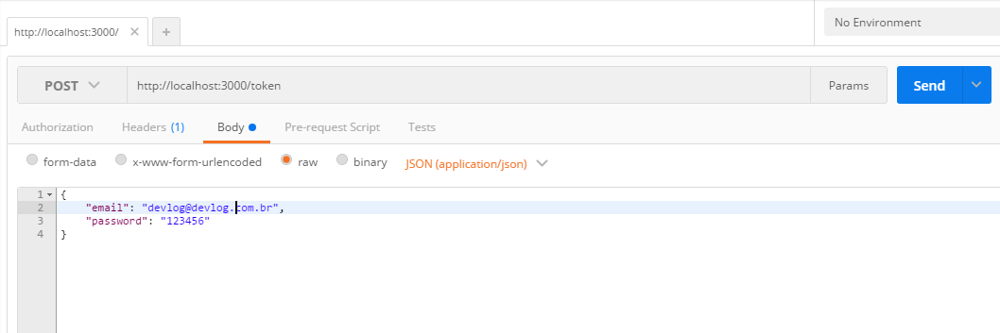
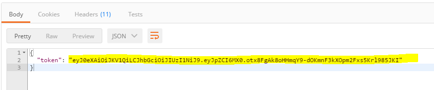
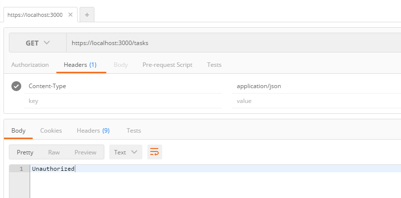
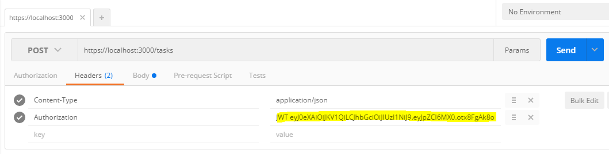

Antes de qualquer coisa coloque esta música pra tocar The Beatles - Mr Postman. Caso prefira pode escutar pelo Spotify
Agora sim, podemos testar nossa API com o este fantástico chrome app: Postman
Instalação
Como já disse ali em cima, o Postman é um Chrome App, então, caso esteja usando Windows ou Linux você precisara ter o Chrome instalado. Caso esteja usando Mac poderá usar o app feito com o Electron disponibilizado no site do Postman. Então:
- Baixe o Postman aqui: https://www.getpostman.com/
- Divirta-se
Levantando API para teste
Vamos usar uma API de exemplo já pronta criada em cima do projeto ProtonType. Falei um pouco sobre ele aqui neste post.
Você precisará do NodeJS 6.x ou maior para usar esta API de exemplo. Claro que poderá usar qualquer API que você tenha controle para testar. Caso queira usar esta sugerida siga os passos abaixo:
Clone o projeto
Levante a api
Esta API nos possibilita criar, alterar, deletar e consultar Tasks e Users.
Para ver os endpoints disponíveis acesse no seu browser:
Usando o Mr. Postman!
Nossa API está escutando na porta 3000 e usa https, portanto a base da nossa URL será https://locahost:3000
Ao abrir o Postman iremos nos deparar com a tela a baixo:

Criando um Usuário
Na tela inicial:
- Escolha a opçao POST
- Coloque a url: https://localhost:3000/users
- Vá para a aba body escolha a opção raw e JSON
No campo de texto a baixo adicione o JSON abaixo:
Sua configuração ficará como na figura abaixo:

Depois clique em Send para cadastrar um usuário.
Testando Autenticação do Usuário
Agora vamos testar a autenticação deste usuário cadastrado. Nossa API implementa um tipo de autenticação chamada JWT. Vejamos como fazer isso no Postman.
Gerando o Token
Primeiro devemos solicitar a um token através da url https://localhost:3000/token.
Coloque esta url no Postman assim como foi feito com o usuário, através do método POST, e enviando o JSON:
|
|
Sua configuração ficará assim:

Clique em send e receberá a resposta com um token:

Pronto, agora você está autenticado. Copie este token e guarde para o próximo passo.
Criando uma Task
Agora vamos criar um task. Usando o método POST envie uma solicitação para url https://localhost:3000/tasks com o JSON abaixo:
|
|
Após clicar em Send, receberemos o resultado:

Isso aconteceu porque não informamos na requisição http o token de autenticação gerado no passo anterior. Então vamos configurar.
- Vá na aba Headers
- No campo key digite Authorization.
- No campo value coloque JWT [token_gerado] (por exemplo: JWT eyJ0eXAiOiJKV1QiLCJhbGciOiJIUzI1NiJ9.eyJpZCI6MX0.otx8FgAk8oHHmqY9-dOKmnF3kXOpm2Fxs5Krl985JKI)

Com esta configuração, estamos enviado o token que geramos no cabeçalho Authorization do http, possibilitando nossa API autenticar sua requisição.
Agora sim, clique em Send e teremos uma Task criada!
Com o Postman você terá uma ótima ferramente para testes de sua API. Agora você pode desbravar as suas outras funcionalidades de acordo com sua necessidade. Teste os outros endpoints da API. Faça bom uso!